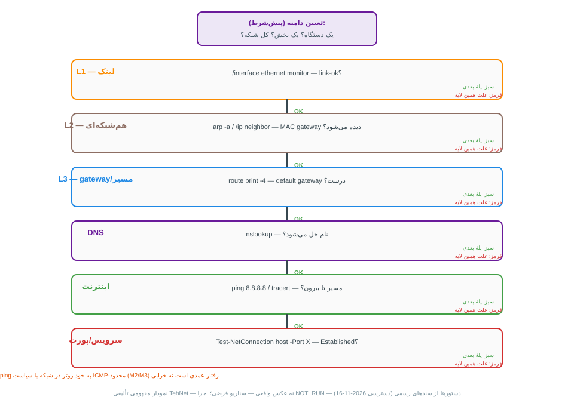

وضعیت درس: DRAFT / NOT_DEPLOYED — در انتظار مرور.
آموزش تصویری از سری پشتیبانی و عیبیابی؛ مخاطب: کاربر/مدیر شبکه.
سناریوی کاملاً فرضی و آموزشی با faultهای تزریقشدهٔ ساختگی؛ هیچ شبکهٔ واقعی دستکاری نشده و هیچ اجرای واقعی NOT_RUN است.
نمودار مفهومی و تألیفی است (نه عکس واقعی).
از تعیین دامنه شروع کنید (فقط یک دستگاه؟ یک بخش؟ کل شبکه؟) و سپس لایهبهلایه از فیزیکی به بالا تست کنید: لینک (L1) → همشبکهای (L2) → gateway/ping (L3) → DNS → اینترنت → سرویس/پورت. نیمی از قطعیهای رایج در L1/L3 است (کابل/پورت/تنظیم IP). دو دام مهم: «سایت باز نمیشود» لزوماً «اینترنت قطع» نیست (DNS جدا از اتصال است)؛ و timeout روی ping به خود روتر در شبکههایی با سیاست ICMP-محدود (مثل درسهای M2/M3) رفتار عمدی است نه خرابی.
| نقش | دستگاه | توضیح |
|---|---|---|
| روتر | hEX (RB750Gr3)، RouterOS v7.16+ | LAN=192.168.88.1/24 روی `bridge` (مبنا درس M3) |
| سوئیچ | یک سوئیچ فرضی unmanaged | کلاینت به آن وصل است |
| کلاینت | ویندوز فرضی | DHCP-گیرنده |
| faultهای تزریقشدهٔ آموزشی | سه حالت جدا: F1 کابل کلاینت جدا · F2 gateway دستیِ غلط (192.168.88.254 بهجای .1) · F3 DNS دستیِ غلط (8.8.4.4 بجای روتر با فیلتر داخلی) | هر fault جدا تزریق و عیبیابی میشود |
هر سه fault صرفاً آموزشی و روی مبناى فرضی است؛ اجرای واقعی هیچکدام NOT_RUN است.
| لایه | سؤال | دستور کلاینت (ویندوز) | دستور روتر (RouterOS) | سالم | خراب |
|---|---|---|---|---|---|
| L1 لینک | کارت لینک دارد؟ | — | `/interface ethernet monitor ether2` (status=link-ok؟ rate؟) | link-ok | no-link → کابل/پورت/سوئیچ |
| L2 همشبکهای | gateway در ARP هست؟ | `arp -a` (ورودی gateway با MAC) | `/ip neighbor print` | MAC روتر دیده میشود | incomplete → VLAN/پورت/IP اشتباه |
| L3 gateway | مسیر به روتر سالم؟ | `ping 192.168.88.1` — ⚠️ در شبکه با سیاست ICMP-محدود timeout طبیعی است (درس M2/M3)؛ ملاک: سایر ترافیک | — | reply (یا ترافیک سرویس عبور میکند) | — |
| L3 مسیر | default gateway درست است؟ | `route print -4` (سطر 0.0.0.0) | `/ip route print` | gateway=روتر | gateway غلط/حذف → اصلاح تنظیم کلاینت |
| DNS | نام حل میشود؟ | `nslookup nas.lan` و `nslookup www.google.com` | `/ip dns cache print` | پاسخ از روتر | timeout/ServFail → DNS کلاینت یا سرویس DNS روتر |
| اینترنت | مسیر به بیرون سالم؟ | `ping 8.8.8.8` و `tracert 8.8.8.8` | `/tool traceroute 8.8.8.8` | reply/hops | قطع در hop اول = سمت روتر/NAT |
| سرویس/پورت | سرویس مقصد پاسخ میدهد؟ | `Test-NetConnection host -Port X` (PowerShell) | `/ip firewall connection print` | Established | رد → فایروال/سرویس down |
منبع دستورهای RouterOS: سند رسمی Packet Flow در RouterOS (تعیین میکند هر بسته از کدام زنجیرهٔ input/forward میگذرد — کلید تشخیص «کدام rule»): https://manual.mikrotik.com/docs/firewall-and-quality-of-service/packet-flow-in-routeros/ (دسترسی 2026-11-16)

شرح متنی نمودار (جایگزین تصویر برای دسترسپذیری): نردبان ششپلهای از پایین به بالا: L1 لینک → L2 همشبکهای (ARP) → L3 gateway (route/ping با هشدار سیاست ICMP) → DNS → اینترنت → سرویس/پورت. هر پله یک جعبه با «دستور تست» و دو خروجی سبز/قرمز: سبز = پلهٔ بعدی؛ قرمز = علت همان لایه و توقف. پایین نمودار جعبهٔ «تعیین دامنه» (یک دستگاه/بخش/کل شبکه) بهعنوان پیششرط، و برچسب «تألیفی/مفهومی».
| خطا | چرا غلط است | درست |
|---|---|---|
| «سایت باز نمیشود = اینترنت قطع» | DNS جدا از اتصال است | اول `ping 8.8.8.8` (اتصال) بعد `nslookup` (نام) |
| timeout روی ping روتر = خرابی | در شبکه با سیاست ICMP-محدود (M2/M3) عمدی است | ملاک را ترافیک واقعی سرویس بگیرید؛ policy را بخوانید |
| عیبیابی کل شبکه برای مشکل یک دستگاه | دامنه تعیین نشده | اول scope؛ سپس لایهای |
| تعویض قطعات بهترتیب حدسی | بدون تست لایهای، علت تغییر میکند نه مشکل | هر گام یک فرضیه + یک تست |
| بدون ثبت قبل/بعد بستن تیکت | پذیرش و عودت مبهم میشود | گزارش قبل/بعد + دستورهای اجراشده |
| پیوند | مقصد |
|---|---|
| تنظیمات لایهٔ 2/3 مبنا | VLAN (M2) · DHCP و DNS (M3) |
| بودجهٔ توان هنگام قطعیهای PoE | بودجهٔ PoE (S2) |
| نقشهٔ کامل سری | topic map |
| عیبیابی/پشتیبانی شبکهٔ شما | خدمات پشتیبانی شبکهٔ تهران |
| درس بعدی سری | N4 — چکلیست پذیرش تحویل (تولید در نوبت بعدی؛ فعلاً فقط در topic map) |